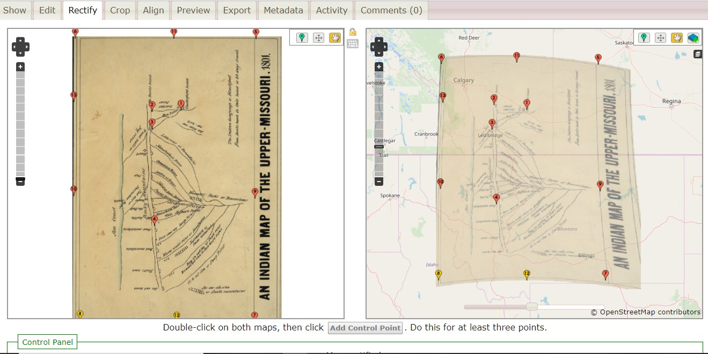

In 1801, a Siksiká Blackfeet chief named Ackomokki partnered with Peter Fidler, a Hudson's Bay Company trader, to draw and label a map of the upper Missouri River region (present-day Montana). Notable mountain peaks and tributaries of the Missouri River are noted in both the Blackfeet language and in English. A single fort icon denotes the only trading post on the map, Chesterfield House, an important achievement for Ackomokki who negotiated to establish this post as a direct line of trade for the broader Siksiká community.
When Ackomokki shared his geographic knowledge with Fidler to produce the map, it was evident to both parties that this land was Blackfoot space. In the late eighteenth century, explorers and fur traders who arrived with business prospects knew the importance of learning Native languages, cultural customs, and the power of kinship to facilitate trade. As what historian Kathleen DuVal describes as a "Native ground," Indigenous peoples determined the conduct of exchange without sacrificing their sovereign identities to accommodate newcomers.[1]
In the perspective of fur companies like Hudson's Bay, the significance of Ackomokki’s geographic knowledge can be summed best by the final notation accompanying the map: “His knowledge of the Missouri sources was greater than the information of our geographers at that time.”[2] However, more than a snapshot of the upper Missouri, this map details Blackfoot ways of endowing land with special meaning rooted in local knowledge, myth, and history. The continental divide of the Rocky Mountains cuts through the center of the page, known in the Blackfeet language as Miistakis or “backbone.” Consistent with many Indigenous cultures, Blackfoot geography is constructed based on an inseparable understanding of space and time. Land is fundamental to human experiences and interactions, what anthropologist Keith Basso explains as “that close companion of heart and mind” which connects landscape to identity.[3] This relationship between space and time inspired the foundations of the project, Mapping the Upper Missouri.
The map that was created by Ackomokki and Peter Fidler is just one example of the many important items, places, people, and events in the upper Missouri River region. The project traces the upper Missouri's rich history from 1801 to 1853 and encompasses four historical themes: the global fur trade, the history of intertribal and colonial relations, the early history of capitalism in North America, and the evolving state of diplomacy from exchange to territoriality. Ultimately, two key arguments arise out of this project. First, that over the course of the first half of the nineteenth century the fur trade transitioned from sites of exchange into sites of administration and surveillance. Secondly, the upper Missouri Indigenous communities affected by these transitions strategically responded in ways that ensured their survival and persistence.
Richard White's foundational article "What is Spatial History?" continues to inspire and challenge the way that historians think about the relationship between space and time in their work. Whereas traditional historical methods emphasize the centrality of time to a narrative, White reverses this notion to argue that space is equally as important. Mapping the Upper Missouri builds upon these ideas to reconceptualize the cultural, political, and economic construction of space in the American West from 1801 to 1853.
This project uses two digital methods, Story Mapping and Georectification, to ground sources and narrative within geography. Together, these methods illustrate that time is not always linear and that geography can challenge seemingly neat, chronological histories. Story Mapping is the process of building an interactive "historical tour" of key locations (marked by pins or polygons) that enable the audience to traverse both space and time. Mapping the Upper Missouri begins by placing viewers in the geo-historic context of the upper Missouri and ends with a discussion of the adaptations and continuities of Indigenous spaces. Twelve pins on the map represent location-centered events, items, and people who played a part in conceptualizing the region. To illustrate these points, this project emphasizes sources of visual culture: maps, art, and print, which are immersive and encourage viewers to engage "atypical" historical sources (i.e. non-text documents). As a result, the story map renders a unique experience of history that can be both educational and pedagogical.
This project also uses Georectification (via Mapwarper.net), a method of overlaying a human-produced maps onto a web-mapping service (e.g. Mapbox, OpenStreetMap, or Google Maps). Georectifying historical maps, like Ackomokki's and Fidler's 1801 map, can powerfully reorient the viewer's perspective and recast the space into a historical framework. At the same time however, it is important to acknowledge that maps—historical and contemporary—do not reflect concrete, accurate realities. Mapping the Upper Missouri hopes to express these complex themes in a way that recognizes that space is contentious, space is sacred, and space is power.
This project was built using open-source Story Mapping code developed by Jack Dougherty and Ilya Ilyankou from Data Visualization for All. It is hosted on GitHub Pages and integrates data and analyses curated by the author in Google Sheets. The primary sources used in this project were made publicly available through the immense digitization efforts of the Library of Congress' Chronicling America, the National Archives, the National Museum of the American Indian (NMAI), the National Anthropological Archives, the Smithsonian American Art Museum, Montana Historical Society, and the University of Oklahoma.This project was also made possible with the support of the Cultural Heritage Informatics initiative from the Department of Anthropology at Michigan State University.
[1]Kathleen DuVal, The Native Ground: Indians and Colonists at the Heart of the Continent (Philadelphia: University of Pennsylvania Press, 2006), 4-5.
[2]Ackomokki and Peter Fidler. “An Indian Map of the Upper Missouri, 1801,” (notation added in 1850), Library of Congress.
[3]Keith Basso, Wisdom Sits in Places: Landscape and Language among the Western Apache (Albuquerque: University of New Mexico Press, 1996), 106.